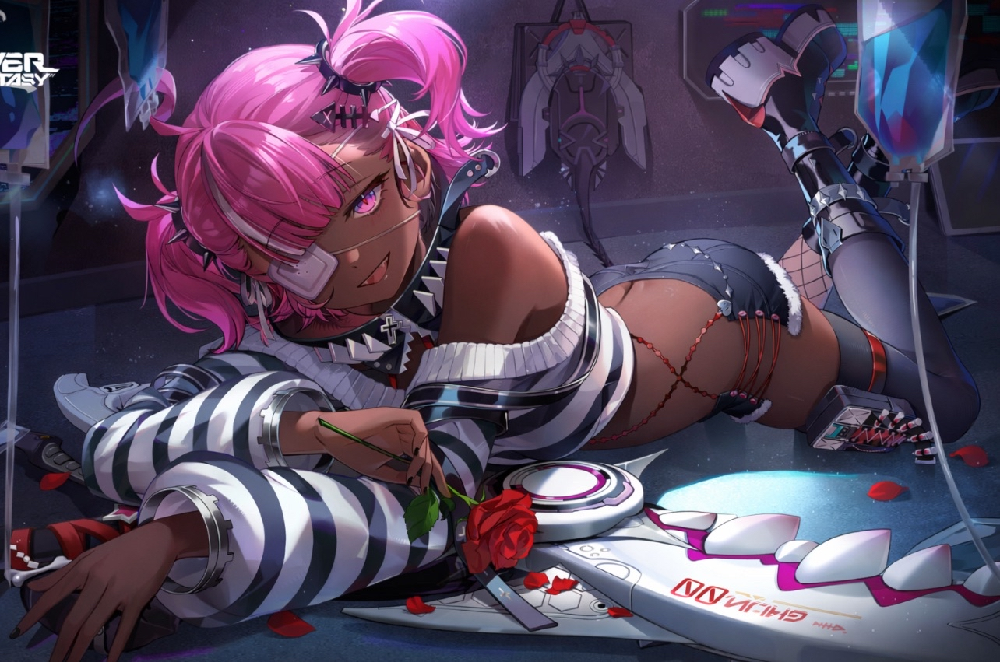
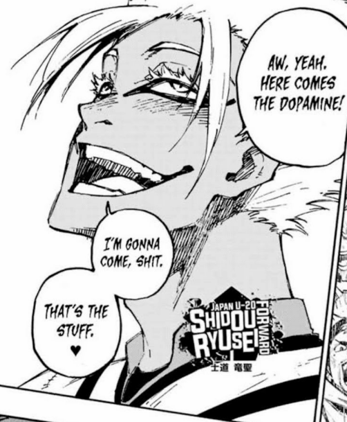
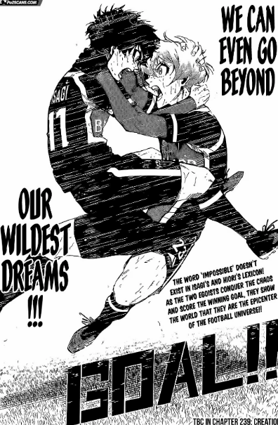
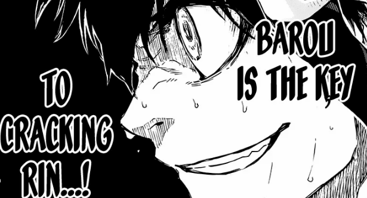
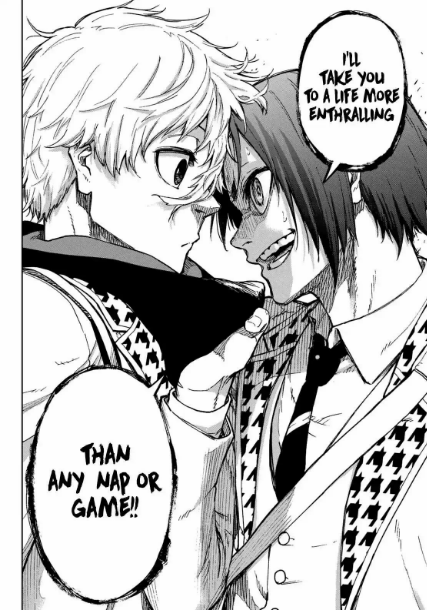
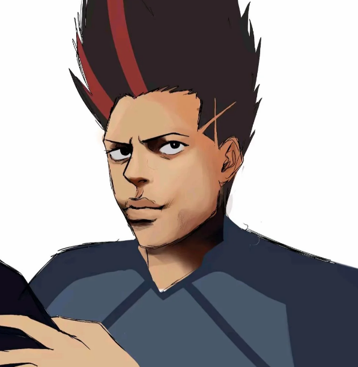

Blue Lock isn’t a soccer manga with gay scenes occasionally.
It’s a psychological anime delving into what someone is willing to risk to become the best out of a wide group.
It dives deep into the psychology of what you are willing to sacrifice.
It does all this while wrapped in a super fucking gay blanket that the majority of the fandom either tries to ignore
(they struggle daily, since the author makes it very known he cares more for the BL than Blue Lock itself, but I digress)
or firmly and happily embraces.
But no matter what, we all come together to enjoy the hype moments and crushing low points—
“Barou is the key to cracking Rin. Remember that.”
Before the next part—
you (yes, you reading this)
will kill everyone over a soccer ball.
Because you are an egoist.
A striker.
And if you say you aren’t—
you will become die.




I know I joke a lot about Blue Lock being gay.
But it’s actually rooted in truth.
The author had interest in the boy love genre but didn’t fully commit due to backlash.
So instead, he made the characters either romantically interested or heavily coded.
That way when people ask if they’re gay—he has plausible deniability.
There are gay people in this thing I swear.
No straight man starts wanting to fuck the football pitch after scoring.
